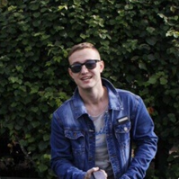

Resnyanskiy Viktor
Sex:male
Date of birth: 02.06.1997
Phone number: +7(931)237-21-36
Mail:aktano13@gmail.com
Web: My instagramm
My location:St.Petersburg, m.Ulitsa Dybenko
Frontend developer
My skills: httml, css, JavaScript, english level: A2-B1, can read techincal documentation.
Work schedule: remote working, flexible schedule
